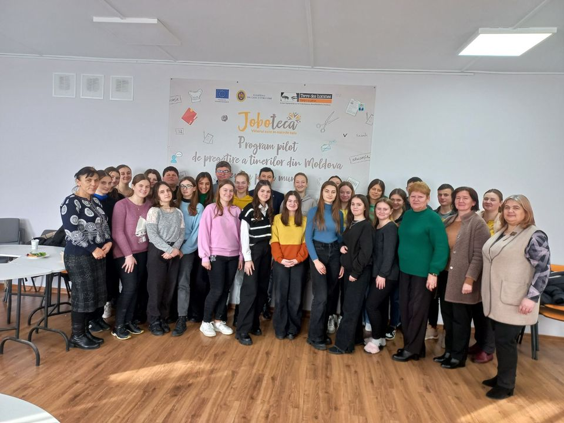
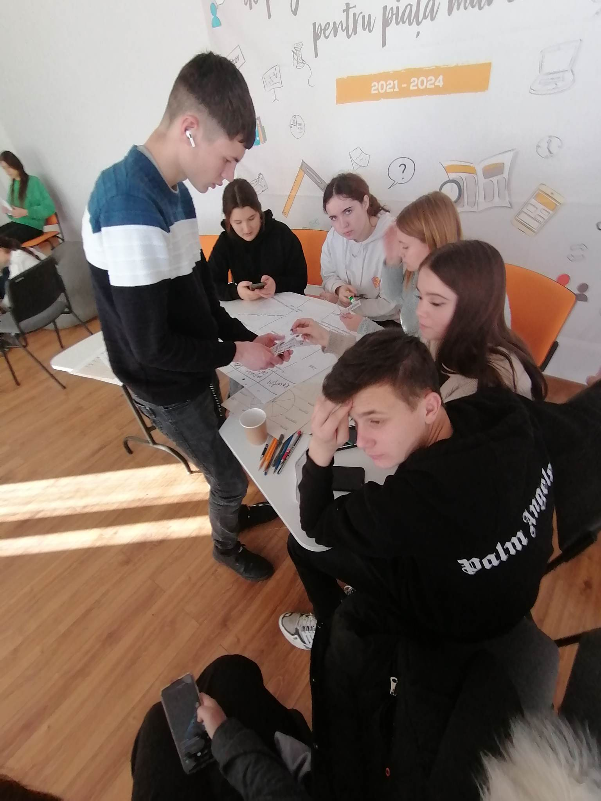
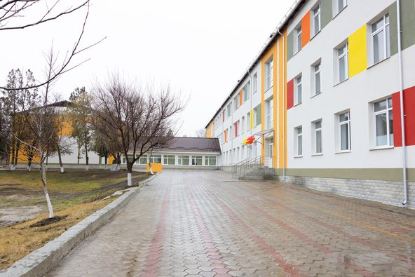
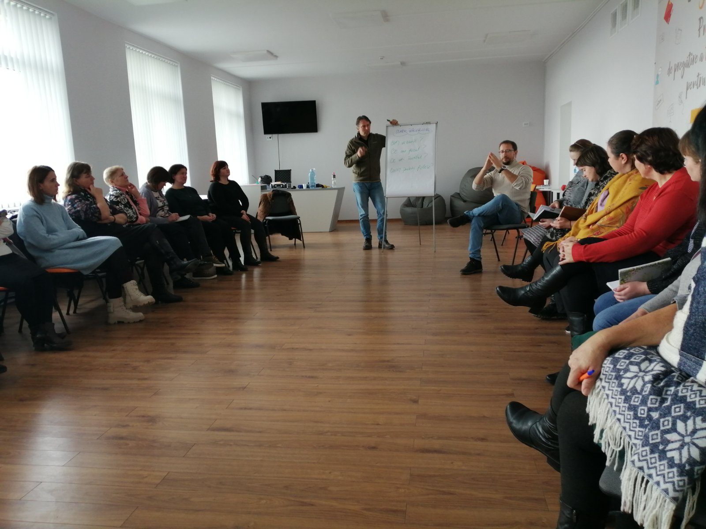

AOPP „Speranța”
Tehnologii Informaționale
03.02.2023✅Tehnologiile informaționale de la o zi la alta sunt mai performante și oferă elevilor posibilitate să desfășoare activități interactive la toate disciplinele. 💻Clasa Viitorului și un cabinet de matematică, în Liceul Teoretic Taraclia Causeni, sa completat astăzi cu două table interactive Display SMART din donația oferită de SRL „Bogatmos” din localitate. ✅Suntem și mai mult obligați să avem rezultate bune. ✅ Mulțumim pentru donație conducătorului Întreprinderii agricole, Domnului Dumitru Bocancea și cetățenilor, care muncesc în toate anotimpurile și ne aduc pâinea pe masă. ✅Tuturor vă dorim sănătate!
Consolidarea capacităților tinerilor în contextul mediului asociativ comunitar prin creare afaceri
31.01.2023 ✅Liceul Teoretic Taraclia Causeni✅START afacerilor din cadrul proiectului „Consolidarea capacităților tinerilor în contextul mediului asociativ comunitar prin creare afaceri”-JOBOTECA, finanțat de Uniunea Europeana, coordonat de Terre des hommes - Moldova în parteneriat cu Ministerul Educației și Cercetării al Republicii Moldova. ✅Tinerii vor realiza Acțiunile, conform Business Planului pentru 4 afaceri: Braderie, Croșetare, Teatrul dramatic, Fitness Club, fiind ghidați de formatori-cadre didactice și mentori-specialiști, tineri antreprenori. Mulțumim mentorilor Victor Silitrari și Mihail Bocancea, care au semnat acordul să susțină și să ajute tinerii privind ghidarea în carieră. Succese tinerilor!!
Liderism din interior spre exterior
21.02.2023 ✅În Liceul Teoretic Taraclia Causeni s-a desfășurat atelierul pentru tineri „Liderism din interior spre exterior”, activitate din cadrul proiectului „Consolidarea capacităților tinerilor în contextul mediului asociativ comunitar prin creare afaceri”-JOBOTECA, finanțat de Uniunea Europeana, coordonat de Terre des hommes - Moldova în parteneriat cu Ministerul Educației și Cercetării al Republicii Moldova. ✅Subiectele abordate de către moderatorii/traineri din echipa Academia Nicolae Dumitrescu: Diana Vrabie și Alexandru Lozinschi au cucerit tinerii pentru o zi de weekend. ⁉️ La dezvoltarea personalității tinerilor este foarte important să integrăm aspectele mandalei personale: fizic, nutrițional, contextual, senzitiv, emoțional, intelectual, interacțional și spiritual.
Școală nouă la Taraclia, raionul Căușeni.
13.01.2023 ✅Școală nouă la Taraclia, raionul Căușeni. După mai mulți ani în care cei circa 400 de elevi din această localitate au învățat în diferite săli improvizate prin clădiri ale unei foste fabrici, de astăzi se pot bucura de o clădire nouă.
În Liceul Teoretic Taraclia Causeni s-a desfășurat Atelierul pentru cadre didactice și părinți.
10.12.2022 ✅În Liceul Teoretic Taraclia Causeni s-a desfășurat Atelierul pentru cadre didactice și părinți cu genericul „Filosofia facilitării și metode participative”, activitate din cadrul proiectului „Consolidarea capacităților tinerilor în contextu mediului asociativ comunitar prin creare afaceri”-JOBOTECA, finanțat de Uniunea Europeana.